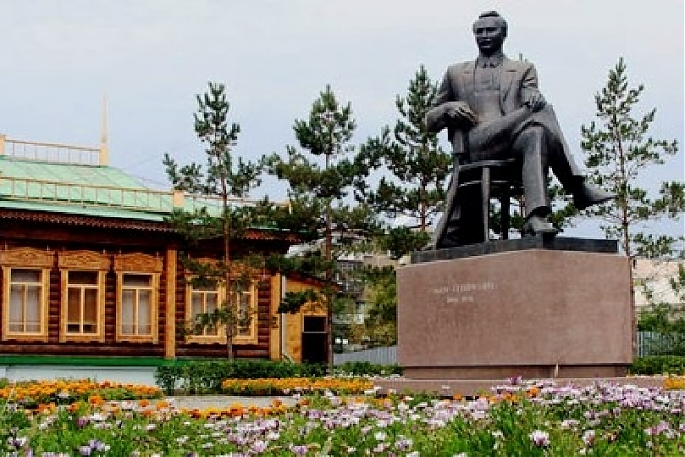

Preserving Cultural History
The Saken Seifullin State Museum is dedicated to preserving and presenting the life, literary works, and political achievements of Saken Seifullin (1894–1938).
Housed in a 19th-century wooden architectural monument, the museum offers a unique journey through early 20th-century Kazakh history, showcasing original manuscripts, personal artifacts, and rare photographs.
Learn About Saken Seifullin
Museum Highlights

Personal Belongings
Explore unique personal effects, including Seifullin’s original suit, desk accessories, and handwritten notes.

Literary Legacy
First edition printings of famous poems, literary journals, and historic documents from the 1920s.

Archival Collection
Over 5,000 preserved items illustrating the cultural awakening and history of Kazakhstan.